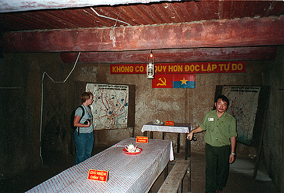

Địa đạo Củ Chi là một hệ thống phòng thủ trong lòng đất ở huyện Củ Chi, cách Thành phố Hồ Chí Minh 70 km về hướng tây-bắc. Hệ thống này được quân kháng chiến Việt Minh và Mặt trận Dân tộc Giải phóng miền Nam Việt Nam đào trong thời kỳ Chiến tranh Đông Dương và Chiến tranh Việt Nam.
Các Thông tin chi tiết về Địa đạo Củ Chi
Lịch sử hình thành:
|
Địa đạo Củ Chi là cách gọi chung của các hệ thống địa đạo khác nhau, được hình thành từ khoảng thời gian 1946-1948, trong thời kỳ chiến tranh Đông Dương. Thời gian này, quân dân hai xã Tân Phú Trung và Phước Vĩnh An đã đào những đoạn hầm ngắn, cấu trúc đơn giản dùng để ẩn nấp, cất giấu tài liệu, vũ khí.
Kết cấu:
|
Địa đạo đào trên một khu vực đất sét pha đá ong nên có độ bền cao, ít bị sụt lở. Hệ thống địa đạo nằm sâu dưới lòng đất, có thể chịu được sức công phá của các loại bom tấn lớn nhất của quân đội Mỹ. Không khí được lấy vào địa đạo thông qua các lỗ thông hơi. Các khu vực khác nhau của địa đạo có thể được cô lập khi cần.
Đường hầm sâu dưới đất từ 3 - 8m, chiều cao chỉ đủ cho một người đi lom khom. Căn hầm đầu tiên ở ngay bìa rừng có giếng ngầm cung cấp nguồn nước uống và sinh hoạt cho toàn khu vực địa đạo.
Hoạt động
|
Đời sống
|
Cuộc sống dưới địa đạo thiếu ánh sáng, ẩm ướt và nóng bức và điều kiện vệ sinh kém nên hầu như đa số những người sống ở địa đạo đều bị ký sinh trùng, bệnh da liễu và các bệnh về xương. Ngoài ra, việc thiếu thốn lương thực, thực phẩm và nhu yếu phẩm cũng là vấn đề lớn nhất của cư dân địa đạo.
Một số hình ảnh về di tích Địa đạo:
|

|
